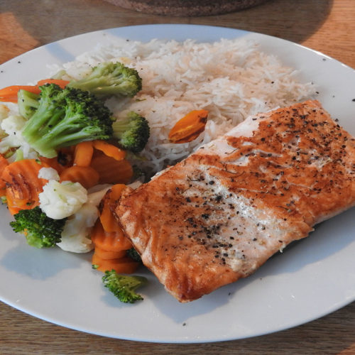

<!DOCTYPE html>
<html lang="en">
<head>
    <meta charset="UTF-8">
    <meta name="viewport" content="width=device-width, initial-scale=1.0">
    <title>Kochrezept</title>
</head>
<body>
    
</body>
</html>
<h1>Kochrezept</h1>

<h2>Lachs mit Reis und Gemüse</h2>

<p>
    <strong>Saftiger, würziger Lachs mit lockerem Reis und knackigem Gemüse.
    Das Gericht ist einfach zuzubereiten 
    und eignet sich gut als ausgewogenes
    Mittag- oder Abendessen.</strong>
</p>


    

<h2>Zutaten für 2 Personen</h2>

<table>
    <tr>
        <td>2</td>
        <td>Stk.</td>
        <td>Lachsfilets</td>
    </tr>
    <tr>
        <td>1</td>
        <td>EL</td>
        <td>Olivenöl</td>
    </tr>
    <tr>
        <td>1</td>
        <td>Prise</td>
        <td>Salz</td>
    </tr>
    <tr>
        <td>1</td>
        <td>Prise</td>
        <td>Pfeffer</td>
    </tr>
    <tr>
        <td>1</td>
        <td>TL</td>
        <td>Paprikapulver</td>
    </tr>
    <tr>
        <td>1</td>
        <td>TL</td>
        <td>Knoblauchpulver</td>
    </tr>
    <tr>
        <td>0,5</td>
        <td>Stk.</td>
        <td>Zitrone</td>
    </tr>
    <tr>
        <td>150</td>
        <td>g</td>
        <td>Basmatireis</td>
    </tr>
    <tr>
        <td>300</td>
        <td>ml</td>
        <td>Wasser</td>
    </tr>
    <tr>
        <td>0,5</td>
        <td>TL</td>
        <td>Salz für den Reis</td>
    </tr>
    <tr>
        <td>1</td>
        <td>Stk.</td>
        <td>Brokkoli</td>
    </tr>
    <tr>
        <td>2</td>
        <td>Stk.</td>
        <td>Karotten</td>
    </tr>
    <tr>
        <td>1</td>
        <td>Stk.</td>
        <td>kleine Zucchini</td>
    </tr>
    <tr>
        <td>1</td>
        <td>EL</td>
        <td>Olivenöl für das Gemüse</td>
    </tr>
</table>

<h2>Benötigte Küchenutensilien</h2>

<ul>
    <li>Pfanne</li>
    <li>Topf</li>
    <li>Kochlöffel</li>
    <li>Messer</li>
    <li>Schneidebrett</li>
</ul>

<h2>Zubereitung</h2>

<ol>
    <li>
        <strong>Reis kochen:</strong>
        Reis waschen und mit Wasser und Salz etwa 12–15 Minuten kochen.
        Anschließend kurz ruhen lassen.
    </li>
    <li>
        <strong>Gemüse vorbereiten:</strong>
        Brokkoli und Karotten klein schneiden und in wenig Wasser dünsten
        oder kurz anbraten. Mit Salz und Pfeffer würzen.
    </li>
    <li>
        <strong>Lachs würzen:</strong>
        Lachsfilets mit Salz, Pfeffer, Paprikapulver und etwas
        Knoblauchpulver würzen.
    </li>
    <li>
        <strong>Lachs braten:</strong>
        Öl in einer Pfanne erhitzen. Die Lachsfilets zunächst auf der
        Hautseite etwa 4–5 Minuten braten. Anschließend wenden und weitere
        3–4 Minuten braten, bis der Fisch durchgegart ist.
    </li>
    <li>
        <strong>Anrichten:</strong>
        Reis auf den Teller geben, Gemüse danebenlegen und das Lachsfilet
        darauf oder daneben platzieren. Mit etwas Zitronensaft beträufeln.
    </li>
</ol>